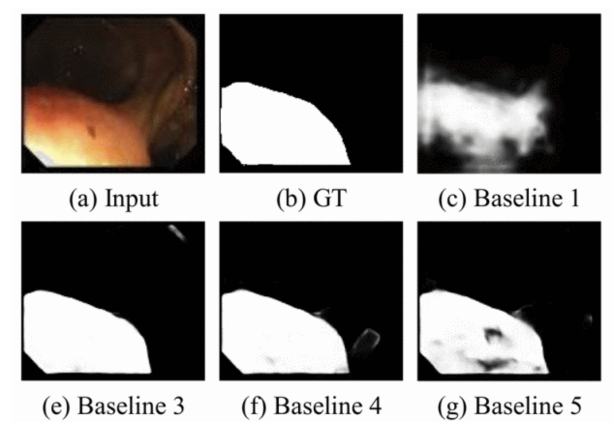

|
Jinjia Guo I am currently pursuing my Master degree of Robotics at the University of Michigan in Ann Arbor. There, I worked in ARM Lab under the guidance of Professor Dmitry Berenson. Previously, I earned dual Bachelor's degrees in Mechanical Engineering from the University of Cincinnati (UC) and Chongqing University (CQU). During my undergraduate studies, I also completed a minor in Robotics at UC. Throughout this period, I engaged in research under the mentorship of Professor Janet Jiaxiang Dong and Professor Rui Li. In addition, in 2022, I collaborated with Nan Mu and Professor Jingfeng Jiang at Michigan Technological University (MTU). |
{kind=link}
Research InterstsMy primary research interest lies in robotic manipulation, particularly enabling robots to use tools to accomplish practical, everyday tasks. Motivated by the challenge highlighted by Moravec's paradox — that robots struggle with manipulation tasks that are effortless for humans. I focus on developing methods that leverage multi-modal sensory data (such as vision and touch) to build robust and generalizable policies and planning frameworks, empowering robotic hands to perform manipulation tasks more reliably and effectively. |
Projects |

|
In-Hand Screwdriver Rotation Based on Linear Programming and Diffusion Strategy
Project page Report We achieve robust in-hand screwdriver manipulation by tightly coupling vision-based point cloud perception with tactile force closure optimization, using diffusion models for trajectory proposals and online LP-based adjustments to maintain stable contact during rotation. |

|
Learning Multi Body Dynamicsy
Project page / Report We propose a hybrid dynamics modeling approach, SAIN, that combines a physics engine with residual learning. By integrating it with MPPI control, we achieve 100% success rate in manipulating target objects under 40 diverse and randomized physical conditions. |
|
|
Search-Based Planning for PR2: ANA* vs A* with Custom Heuristics
Project page / Report This study compares A* and ANA* algorithms on the PR2 robot, showing that heuristic design critically balances planning efficiency and safety, with ANA* offering greater adaptability in dynamic environments while A* excels in real-time responsiveness. |
|
|
Autonomous SLAM and Exploration with MBot
Report In the Botlab, movement control, obstacle detection, maze exploration, and self-localization functionality was developed on the MBot robot, a mobile robot platform. It is designed to explore the fundamentals of robot autonomy by developing MBot with autonomous mapping, localization, and exploration capabilities. |

|
Robust Detecting and Palletizing with Robot Arm
Project page / Report In the Armlab, a 5-DOF robotic arm fully autonomously arranges blocks of different sizes, colors and positions into the desired arrangement. Numerical inverse kinematics is used to determine the appropriate waypoints. An overhead LiDAR Camera is utilized to identify blocks on the board. |
|
|
Reinforcement Learning for Robotic Capture of Free-Floating Objects in Space
Report In the Armlab, a 5-DOF robotic arm fully autonomously arranges blocks of different sizes, colors and positions into the desired arrangement. Numerical inverse kinematics is used to determine the appropriate waypoints. An overhead LiDAR Camera is utilized to identify blocks on the board. |
Publications |
|
An industrial mineral raw material classification method based on image segmentation
Xuewen Xiao, jinjia Guo, Xin Cao, Xiaohui Zhang, Shuyang Pang 2022 International Conference on Manufacturing, Industrial Automation and Electronics (ICMIAE) We developed a Unet++-based image segmentation method for mineral raw material classification, achieving 92.86% precision by accurately identifying and distinguishing particle types at the pixel level. |
|
|  |
A Multi-Distance Feature Dissimilarity-Guided Encoder-Decoder Network for Polyp Segmentation
Xianchao Zhang, jinjia Guo, Nan Mu, Jingfeng Jiang 2023 IEEE International Conference on Systems, Man, and Cybernetics (SMC) We propose a multi-distance feature dissimilarity-guided encoder-decoder network, combining MDDM and HLM modules, to achieve more accurate polyp segmentation across diverse datasets by effectively capturing and supervising multi-scale feature differences. |
|
Learning How to Detect Salient Objects in Nighttime Sceness
Nan Mu, jinjia Guo, Jingfeng Jiang Journal of Scientific & Industrial Research 2023 We proposed MBNet, a novel network combining high-low feature aggregation and hierarchical supervision for salient object detection in nighttime scenes, achieving superior performance over seven state-of-the-art methods on a newly built low-light dataset. |
Experiences |
|
Fitten Technology Co., Ltd.
LLM Research Assistant
May/2024 - August/2024
Applied RAG in JittorLLM, a large language code completion model based on the self-developed framework: Jittor. The model reduces latency by 70% and improves accuracy by 20% compared with Copilot. |
|
|
University of Cincinnati
Peer-TA in College of Engineering and Applied Science
August/2023 - April/2024
Demonstrated strong written and verbal communication skills by providing clear, constructive feedback on assign- ments for a cohort of 103 students, ensuring high standards of professionalism and efficiency. |
|

|
Michigan Technological University
Research Assistant
August/2022 - December/2022, April/2023 - August/2023
Designed and implemented a new salient object detection network tailored for medical imaging, utilizing multi-scale fusion in neural networks to achieve a performance improvement of over 10%. |
|
CISDI INFORMATION Technology Co., Ltd.
Computer Vision Algorithm Assistant
May/2021 - August/2021, January/2022 - April/2022
Created a dataset for raw-material classification and segmentation and developed a Unet++ algorithm for granularity detection on belt machines for Magang (Group) Holding Co., Ltd. |
|
Feel free to steal this website's source code. Do not scrape the HTML from this page itself, as it includes analytics tags that you do not want on your own website — use the GitHub code instead. Also, consider using Leonid Keselman's Jekyll fork of this page. |